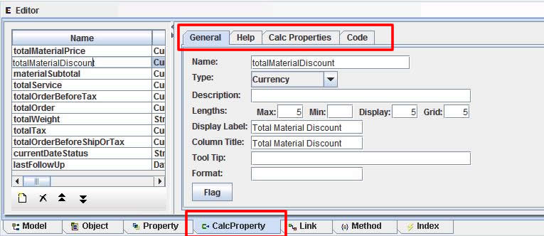
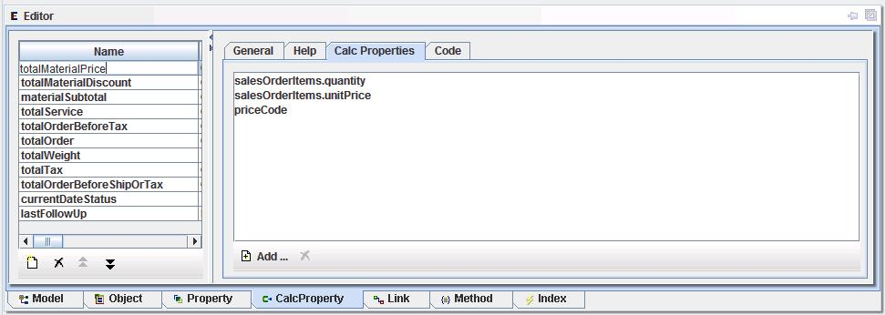
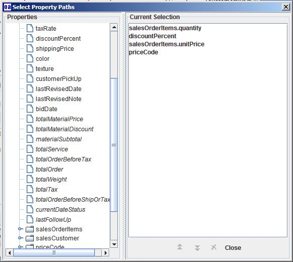
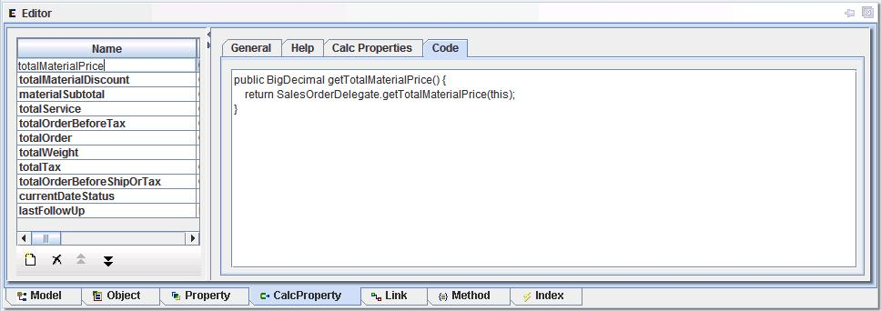

Calculated Properties Editor
Calculated properties are properties from objects that are not stored in the
database, but are calculated based on other properties and information.
A calculated property is like a formula on a spreadsheet, where it is always up to date,
by recalculating whenever anything changes that affects its value.
With calculated properties, this is taken further to allow it for anywhere in the model,
General information.

Properties used by this Calculated Property. If one of these is changed,
then the calc prop can be recalculated.

List of properties that are used for the Calculation.
Selecting "Add" button command will display the
select property dialog window (display next).

Code that is added to generated code when the program
is created.
